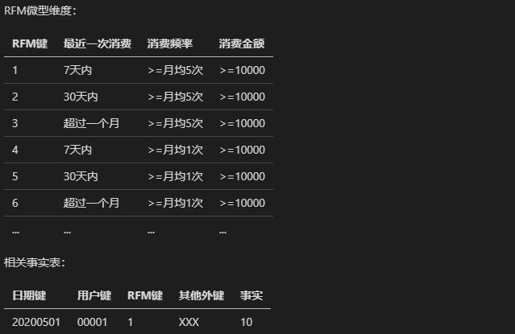
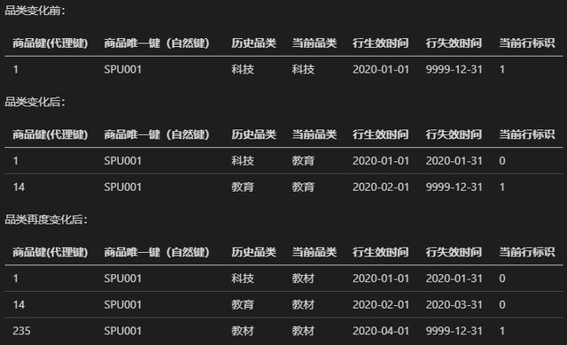
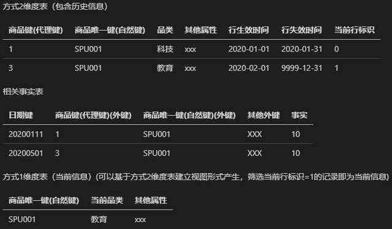

拉链表的使用场景
（一）中提到
全量表df
增量表di
追加表da
拉链表dz
流水表
快照表
缓慢变化维（SCD）
维表和宽表（维表的使用及维度退化手法）
维度退化
- 一般情况下，维度建模都会将事实表的各个维度作为外键创建不同的维度表，进而形成星型模型。但是，事实表中有个别简单的维度，不需要单独建立维度表，例如一条订单信息中，支付方式单独创建一个维度表几乎是没有意义的。而且会浪费SQL的JOIN成本。此外还有发票号，序列号等等
- 减少维度的数量，简化维度数据仓库的模式。简单的模式比复杂的更容易理解，也有更好的查询性能。当一个维度没有数据仓库需要的任何数据时就可以退化此维度。需要把退化维度的相关数据迁移到事实表中，然后删除退化的维度。
- 维表数据一般根据ods层数据加工生成，在设计宽表的时候，可以适当的用一些维度退化手法，将维度退化到事实表中，减少事实表和维表的关联
- 退化维具有普通维的各种操作，比如：上卷，切片，切块等
- 如果存在退化维，那么在ETL的过程将会变得容易。
- 它可以让
Group by等操作变得更快
矮宽表+高窄表
- 字面义：宽表是字段个数较多的表，窄表是字段个数较少的表。
- 引申义：严格按照数据库设计三范式。尽量减少数据冗余，但是缺点是修改一个数据可能需要修改多张表。通常是指业务主题相关的指标、维度、属性关联在一起的一张数据库表。由于把不同的内容都放在同一张表存储，宽表已经不符合三范式的模型设计规范，随之带来的主要坏处就是数据的大量冗余，与之相对应的好处就是查询性能的提高与便捷。这种宽表的设计广泛应用于数据挖掘模型训练前的数据准备，通过把相关字段放在同一张表中，可以大大提高数据挖掘模型训练过程中迭代计算时的效率问题。
- 一句话，空间换时间，便于训练迭代、减少表关联数量，修改少量数据时不需要该多张表
缓慢变化维
- 维度表里面的数据并非是始终不变的，总会随着时间发生变化。更新的时候主要有三种方法。
-
直接
UPDATE。与业务数据保持一致。 -
新增一条记录，ID不变，其他字段为修改后的信息。(这样能记录历史变化的信息)
- 但由于是新增的一条且ID相同，在统计时会重复计算两条数据，所以要加一个新的主键，叫
代理键, 即用来代替原本的ID键作为唯一字段。 - 此外，往往还需要新增时间列，这样就能记录什么时间段内，这条记录是有效的，什么时间段变成另外一个值。同时也能记录到底是
a->b还是b->a
- 但由于是新增的一条且ID相同，在统计时会重复计算两条数据，所以要加一个新的主键，叫
-
有时，需求并不是需要那么详细，只需要记录两次内(有限次)的变化时，可以在加多个字段实现。
id name value value1 value2 1 陈 100 200 150 -
将个别容易变化的维度(有限的)抽离出来，单独构建成RFM微型维度，并在相关事实表中增加RFM键作为外键。
 -
(1+4) 将抽离出来的维度ID放到事实表作为外键，以
UPDATE的方式更新。 -
(1+2+3) 每次变化，将更新当前行标识字段(1)，新增一条记录(2), 更新历史字段和当前字段(3)
 -
将维度代理键分离出来作为事实表外键，维度的自然键也同时作为事实表外键。这样就有双重外键。更新时，同时新增维度表记录和事实表记录。(感觉有点麻烦)
 -
快照表，每天(每月)从事实表中复制一份，存为当前时间的分区。以空间换时间。
-
历史拉链表，相比(2)少了代理键，相比(8)降低了存储。